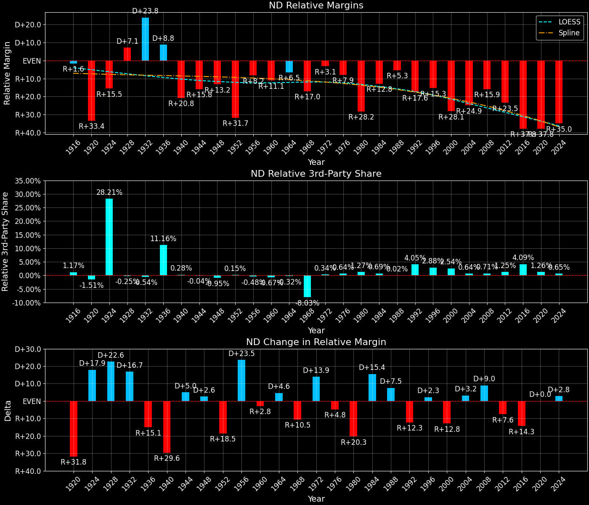

North Dakota (ND) — Statewide
North Dakota (ND) — Statewide
Margins · 3rd-Party share · Pres. deltas

Relative margins · Relative 3rd-Party · Rel. deltas
North Dakota (ND) — Total Data
| Year | D | R | State Margin | Nat. Margin | Rel. Margin | Total votes | EVs |
|---|---|---|---|---|---|---|---|
| 1916 | 55,206(47.8%) | 53,471(46.3%) | D+1.5 | D+3.1 | R+1.6 | 115,390 | 5 |
| 1920 | 37,422(18.2%)(Δ -17,784) | 160,072(77.8%)(Δ 106,601) | R+59.6(Δ R+61.1) | R+26.2(Δ R+29.3) | R+33.4(Δ R+31.8) | 205,776(Δ 90,386) | 5 |
| 1924 | 13,858(7.0%)(Δ -23,564) | 94,931(47.7%)(Δ -65,141) | R+40.7(Δ D+18.9) | R+25.2(Δ D+1.0) | R+15.5(Δ D+17.9) | 199,081(Δ -6,695) | 5 |
| 1928 | 106,648(44.5%)(Δ 92,790) | 131,441(54.8%)(Δ 36,510) | R+10.3(Δ D+30.4) | R+17.4(Δ D+7.8) | D+7.1(Δ D+22.6) | 239,867(Δ 40,786) | 5 |
| 1932 | 178,350(69.6%)(Δ 71,702) | 71,772(28.0%)(Δ -59,669) | D+41.6(Δ D+51.9) | D+17.8(Δ D+35.2) | D+23.8(Δ D+16.7) | 256,290(Δ 16,423) | 4 |
| 1936 | 163,148(59.6%)(Δ -15,202) | 72,751(26.6%)(Δ 979) | D+33.0(Δ R+8.6) | D+24.3(Δ D+6.5) | D+8.8(Δ R+15.1) | 273,716(Δ 17,426) | 4 |
| 1940 | 124,036(44.2%)(Δ -39,112) | 154,590(55.1%)(Δ 81,839) | R+10.9(Δ R+43.9) | D+10.0(Δ R+14.3) | R+20.8(Δ R+29.6) | 280,775(Δ 7,059) | 4 |
| 1944 | 100,144(45.5%)(Δ -23,892) | 118,535(53.8%)(Δ -36,055) | R+8.4(Δ D+2.5) | D+7.5(Δ R+2.5) | R+15.8(Δ D+5.0) | 220,171(Δ -60,604) | 4 |
| 1948 | 95,812(43.4%)(Δ -4,332) | 115,139(52.2%)(Δ -3,396) | R+8.8(Δ R+0.4) | D+4.5(Δ R+3.0) | R+13.2(Δ D+2.6) | 220,716(Δ 545) | 4 |
| 1952 | 76,694(28.4%)(Δ -19,118) | 191,712(71.0%)(Δ 76,573) | R+42.6(Δ R+33.8) | R+10.9(Δ R+15.3) | R+31.7(Δ R+18.5) | 270,127(Δ 49,411) | 4 |
| 1956 | 96,742(38.1%)(Δ 20,048) | 156,766(61.7%)(Δ -34,946) | R+23.6(Δ D+18.9) | R+15.4(Δ R+4.5) | R+8.2(Δ D+23.5) | 253,991(Δ -16,136) | 4 |
| 1960 | 123,963(44.5%)(Δ 27,221) | 154,310(55.4%)(Δ -2,456) | R+10.9(Δ D+12.7) | D+0.2(Δ D+15.6) | R+11.1(Δ R+2.8) | 278,431(Δ 24,440) | 4 |
| 1964 | 149,784(58.0%)(Δ 25,821) | 108,207(41.9%)(Δ -46,103) | D+16.1(Δ D+27.0) | D+22.6(Δ D+22.4) | R+6.5(Δ D+4.6) | 258,389(Δ -20,042) | 4 |
| 1968 | 94,769(38.2%)(Δ -55,015) | 138,669(55.9%)(Δ 30,462) | R+17.7(Δ R+33.8) | R+0.7(Δ R+23.3) | R+17.0(Δ R+10.5) | 247,882(Δ -10,507) | 4 |
| 1972 | 100,384(35.8%)(Δ 5,615) | 174,109(62.1%)(Δ 35,440) | R+26.3(Δ R+8.6) | R+23.1(Δ R+22.4) | R+3.1(Δ D+13.9) | 280,514(Δ 32,632) | 3 |
| 1976 | 136,078(45.8%)(Δ 35,694) | 153,470(51.7%)(Δ -20,639) | R+5.9(Δ D+20.4) | D+2.1(Δ D+25.2) | R+7.9(Δ R+4.8) | 297,094(Δ 16,580) | 3 |
| 1980 | 79,189(26.3%)(Δ -56,889) | 193,695(64.2%)(Δ 40,225) | R+38.0(Δ R+32.1) | R+9.7(Δ R+11.8) | R+28.2(Δ R+20.3) | 301,545(Δ 4,451) | 3 |
| 1984 | 104,429(33.8%)(Δ 25,240) | 200,336(64.8%)(Δ 6,641) | R+31.0(Δ D+6.9) | R+18.2(Δ R+8.5) | R+12.8(Δ D+15.4) | 308,971(Δ 7,426) | 3 |
| 1988 | 127,739(43.0%)(Δ 23,310) | 166,559(56.0%)(Δ -33,777) | R+13.1(Δ D+18.0) | R+7.7(Δ D+10.5) | R+5.3(Δ D+7.5) | 297,261(Δ -11,710) | 3 |
| 1992 | 99,168(32.2%)(Δ -28,571) | 136,244(44.2%)(Δ -30,315) | R+12.0(Δ D+1.0) | D+5.6(Δ D+13.3) | R+17.6(Δ R+12.3) | 308,133(Δ 10,872) | 3 |
| 1996 | 106,905(40.1%)(Δ 7,737) | 125,050(46.9%)(Δ -11,194) | R+6.8(Δ D+5.2) | D+8.5(Δ D+3.0) | R+15.3(Δ D+2.3) | 266,411(Δ -41,722) | 3 |
| 2000 | 95,284(33.1%)(Δ -11,621) | 174,852(60.7%)(Δ 49,802) | R+27.6(Δ R+20.8) | D+0.5(Δ R+8.0) | R+28.1(Δ R+12.8) | 288,256(Δ 21,845) | 3 |
| 2004 | 111,052(35.5%)(Δ 15,768) | 196,651(62.9%)(Δ 21,799) | R+27.4(Δ D+0.2) | R+2.5(Δ R+3.0) | R+24.9(Δ D+3.2) | 312,833(Δ 24,577) | 3 |
| 2008 | 141,278(44.6%)(Δ 30,226) | 168,601(53.3%)(Δ -28,050) | R+8.6(Δ D+18.7) | D+7.3(Δ D+9.7) | R+15.9(Δ D+9.0) | 316,621(Δ 3,788) | 3 |
| 2012 | 124,827(38.7%)(Δ -16,451) | 188,163(58.3%)(Δ 19,562) | R+19.6(Δ R+11.0) | D+3.9(Δ R+3.4) | R+23.5(Δ R+7.6) | 322,627(Δ 6,006) | 3 |
| 2016 | 93,758(27.2%)(Δ -31,069) | 216,794(63.0%)(Δ 28,631) | R+35.7(Δ R+16.1) | D+2.1(Δ R+1.8) | R+37.8(Δ R+14.3) | 344,360(Δ 21,733) | 3 |
| 2020 | 115,042(31.8%)(Δ 21,284) | 235,751(65.1%)(Δ 18,957) | R+33.3(Δ D+2.4) | D+4.5(Δ D+2.4) | R+37.8(Δ D+0.0) | 362,024(Δ 17,664) | 3 |
| 2024 | 112,327(30.5%)(Δ -2,715) | 246,505(67.0%)(Δ 10,754) | R+36.4(Δ R+3.1) | R+1.5(Δ R+5.9) | R+35.0(Δ D+2.8) | 368,155(Δ 6,131) | 3 |
North Dakota (ND) — Third-Party Data
| Year | D | R | Other votes | State 3rd-Party Share | 3rd-Party Nat. Share | 3rd-Party Rel. Share |
|---|---|---|---|---|---|---|
| 1916 | 55,206(47.8%) | 53,471(46.3%) | 6,713(5.8%) | 5.82% | 4.64% | 1.17% |
| 1920 | 37,422(18.2%)(Δ -17,784) | 160,072(77.8%)(Δ 106,601) | 8,282(4.0%) | 4.02% | 5.53% | -1.51% |
| 1924 | 13,858(7.0%)(Δ -23,564) | 94,931(47.7%)(Δ -65,141) | 90,292(45.4%) | 45.35% | 17.14% | 28.21% |
| 1928 | 106,648(44.5%)(Δ 92,790) | 131,441(54.8%)(Δ 36,510) | 1,778(0.7%) | 0.74% | 0.99% | -0.25% |
| 1932 | 178,350(69.6%)(Δ 71,702) | 71,772(28.0%)(Δ -59,669) | 6,168(2.4%) | 2.41% | 2.94% | -0.54% |
| 1936 | 163,148(59.6%)(Δ -15,202) | 72,751(26.6%)(Δ 979) | 37,817(13.8%) | 13.82% | 2.66% | 11.16% |
| 1940 | 124,036(44.2%)(Δ -39,112) | 154,590(55.1%)(Δ 81,839) | 2,149(0.8%) | 0.77% | 0.48% | 0.28% |
| 1944 | 100,144(45.5%)(Δ -23,892) | 118,535(53.8%)(Δ -36,055) | 1,492(0.7%) | 0.68% | 0.72% | -0.04% |
| 1948 | 95,812(43.4%)(Δ -4,332) | 115,139(52.2%)(Δ -3,396) | 9,765(4.4%) | 4.42% | 5.38% | -0.95% |
| 1952 | 76,694(28.4%)(Δ -19,118) | 191,712(71.0%)(Δ 76,573) | 1,721(0.6%) | 0.64% | 0.49% | 0.15% |
| 1956 | 96,742(38.1%)(Δ 20,048) | 156,766(61.7%)(Δ -34,946) | 483(0.2%) | 0.19% | 0.67% | -0.48% |
| 1960 | 123,963(44.5%)(Δ 27,221) | 154,310(55.4%)(Δ -2,456) | 158(0.1%) | 0.06% | 0.73% | -0.67% |
| 1964 | 149,784(58.0%)(Δ 25,821) | 108,207(41.9%)(Δ -46,103) | 398(0.2%) | 0.15% | 0.48% | -0.32% |
| 1968 | 94,769(38.2%)(Δ -55,015) | 138,669(55.9%)(Δ 30,462) | 14,444(5.8%) | 5.83% | 13.86% | -8.03% |
| 1972 | 100,384(35.8%)(Δ 5,615) | 174,109(62.1%)(Δ 35,440) | 6,021(2.1%) | 2.15% | 1.80% | 0.34% |
| 1976 | 136,078(45.8%)(Δ 35,694) | 153,470(51.7%)(Δ -20,639) | 7,546(2.5%) | 2.54% | 1.90% | 0.64% |
| 1980 | 79,189(26.3%)(Δ -56,889) | 193,695(64.2%)(Δ 40,225) | 28,661(9.5%) | 9.50% | 8.24% | 1.27% |
| 1984 | 104,429(33.8%)(Δ 25,240) | 200,336(64.8%)(Δ 6,641) | 4,206(1.4%) | 1.36% | 0.67% | 0.69% |
| 1988 | 127,739(43.0%)(Δ 23,310) | 166,559(56.0%)(Δ -33,777) | 2,963(1.0%) | 1.00% | 0.98% | 0.02% |
| 1992 | 99,168(32.2%)(Δ -28,571) | 136,244(44.2%)(Δ -30,315) | 72,721(23.6%) | 23.60% | 19.55% | 4.05% |
| 1996 | 106,905(40.1%)(Δ 7,737) | 125,050(46.9%)(Δ -11,194) | 34,456(12.9%) | 12.93% | 10.05% | 2.88% |
| 2000 | 95,284(33.1%)(Δ -11,621) | 174,852(60.7%)(Δ 49,802) | 18,120(6.3%) | 6.29% | 3.75% | 2.54% |
| 2004 | 111,052(35.5%)(Δ 15,768) | 196,651(62.9%)(Δ 21,799) | 5,130(1.6%) | 1.64% | 1.00% | 0.64% |
| 2008 | 141,278(44.6%)(Δ 30,226) | 168,601(53.3%)(Δ -28,050) | 6,742(2.1%) | 2.13% | 1.42% | 0.71% |
| 2012 | 124,827(38.7%)(Δ -16,451) | 188,163(58.3%)(Δ 19,562) | 9,637(3.0%) | 2.99% | 1.73% | 1.25% |
| 2016 | 93,758(27.2%)(Δ -31,069) | 216,794(63.0%)(Δ 28,631) | 33,808(9.8%) | 9.82% | 5.73% | 4.09% |
| 2020 | 115,042(31.8%)(Δ 21,284) | 235,751(65.1%)(Δ 18,957) | 11,231(3.1%) | 3.10% | 1.84% | 1.26% |
| 2024 | 112,327(30.5%)(Δ -2,715) | 246,505(67.0%)(Δ 10,754) | 9,323(2.5%) | 2.53% | 1.88% | 0.65% |

Two-party margins · relative · deltas
North Dakota (ND) — Two-Party Data
| Year | D | R | 2-Party Margin | 2-Party Nat. Margin | 2-Party Rel. Margin | EVs |
|---|---|---|---|---|---|---|
| 1916 | 55,206(50.8%) | 53,471(49.2%) | D+1.6 | D+3.3 | R+1.7 | 5 |
| 1920 | 37,422(18.9%)(Δ -17,784) | 160,072(81.1%)(Δ 106,601) | R+62.1(Δ R+63.7) | R+27.7(Δ R+31.0) | R+34.4(Δ R+32.7) | 5 |
| 1924 | 13,858(12.7%)(Δ -23,564) | 94,931(87.3%)(Δ -65,141) | R+74.5(Δ R+12.4) | R+30.4(Δ R+2.7) | R+44.1(Δ R+9.7) | 5 |
| 1928 | 106,648(44.8%)(Δ 92,790) | 131,441(55.2%)(Δ 36,510) | R+10.4(Δ D+64.1) | R+17.6(Δ D+12.8) | D+7.2(Δ D+51.3) | 5 |
| 1932 | 178,350(71.3%)(Δ 71,702) | 71,772(28.7%)(Δ -59,669) | D+42.6(Δ D+53.0) | D+18.3(Δ D+35.9) | D+24.3(Δ D+17.1) | 4 |
| 1936 | 163,148(69.2%)(Δ -15,202) | 72,751(30.8%)(Δ 979) | D+38.3(Δ R+4.3) | D+24.9(Δ D+6.6) | D+13.4(Δ R+10.9) | 4 |
| 1940 | 124,036(44.5%)(Δ -39,112) | 154,590(55.5%)(Δ 81,839) | R+11.0(Δ R+49.3) | D+10.0(Δ R+14.9) | R+21.0(Δ R+34.4) | 4 |
| 1944 | 100,144(45.8%)(Δ -23,892) | 118,535(54.2%)(Δ -36,055) | R+8.4(Δ D+2.6) | D+7.5(Δ R+2.5) | R+16.0(Δ D+5.0) | 4 |
| 1948 | 95,812(45.4%)(Δ -4,332) | 115,139(54.6%)(Δ -3,396) | R+9.2(Δ R+0.8) | D+4.7(Δ R+2.8) | R+13.9(Δ D+2.1) | 4 |
| 1952 | 76,694(28.6%)(Δ -19,118) | 191,712(71.4%)(Δ 76,573) | R+42.9(Δ R+33.7) | R+10.9(Δ R+15.6) | R+31.9(Δ R+18.0) | 4 |
| 1956 | 96,742(38.2%)(Δ 20,048) | 156,766(61.8%)(Δ -34,946) | R+23.7(Δ D+19.2) | R+15.5(Δ R+4.6) | R+8.2(Δ D+23.8) | 4 |
| 1960 | 123,963(44.5%)(Δ 27,221) | 154,310(55.5%)(Δ -2,456) | R+10.9(Δ D+12.8) | D+0.2(Δ D+15.7) | R+11.1(Δ R+2.9) | 4 |
| 1964 | 149,784(58.1%)(Δ 25,821) | 108,207(41.9%)(Δ -46,103) | D+16.1(Δ D+27.0) | D+22.7(Δ D+22.5) | R+6.6(Δ D+4.5) | 4 |
| 1968 | 94,769(40.6%)(Δ -55,015) | 138,669(59.4%)(Δ 30,462) | R+18.8(Δ R+34.9) | R+0.8(Δ R+23.5) | R+18.0(Δ R+11.4) | 4 |
| 1972 | 100,384(36.6%)(Δ 5,615) | 174,109(63.4%)(Δ 35,440) | R+26.9(Δ R+8.1) | R+23.6(Δ R+22.8) | R+3.3(Δ D+14.7) | 3 |
| 1976 | 136,078(47.0%)(Δ 35,694) | 153,470(53.0%)(Δ -20,639) | R+6.0(Δ D+20.9) | D+2.1(Δ D+25.7) | R+8.1(Δ R+4.8) | 3 |
| 1980 | 79,189(29.0%)(Δ -56,889) | 193,695(71.0%)(Δ 40,225) | R+42.0(Δ R+36.0) | R+10.6(Δ R+12.7) | R+31.4(Δ R+23.2) | 3 |
| 1984 | 104,429(34.3%)(Δ 25,240) | 200,336(65.7%)(Δ 6,641) | R+31.5(Δ D+10.5) | R+18.3(Δ R+7.7) | R+13.1(Δ D+18.2) | 3 |
| 1988 | 127,739(43.4%)(Δ 23,310) | 166,559(56.6%)(Δ -33,777) | R+13.2(Δ D+18.3) | R+7.8(Δ D+10.5) | R+5.4(Δ D+7.7) | 3 |
| 1992 | 99,168(42.1%)(Δ -28,571) | 136,244(57.9%)(Δ -30,315) | R+15.7(Δ R+2.6) | D+6.9(Δ D+14.7) | R+22.7(Δ R+17.3) | 3 |
| 1996 | 106,905(46.1%)(Δ 7,737) | 125,050(53.9%)(Δ -11,194) | R+7.8(Δ D+7.9) | D+9.5(Δ D+2.6) | R+17.3(Δ D+5.4) | 3 |
| 2000 | 95,284(35.3%)(Δ -11,621) | 174,852(64.7%)(Δ 49,802) | R+29.5(Δ R+21.6) | D+0.5(Δ R+8.9) | R+30.0(Δ R+12.7) | 3 |
| 2004 | 111,052(36.1%)(Δ 15,768) | 196,651(63.9%)(Δ 21,799) | R+27.8(Δ D+1.6) | R+2.5(Δ R+3.0) | R+25.3(Δ D+4.7) | 3 |
| 2008 | 141,278(45.6%)(Δ 30,226) | 168,601(54.4%)(Δ -28,050) | R+8.8(Δ D+19.0) | D+7.4(Δ D+9.9) | R+16.2(Δ D+9.1) | 3 |
| 2012 | 124,827(39.9%)(Δ -16,451) | 188,163(60.1%)(Δ 19,562) | R+20.2(Δ R+11.4) | D+3.9(Δ R+3.4) | R+24.2(Δ R+8.0) | 3 |
| 2016 | 93,758(30.2%)(Δ -31,069) | 216,794(69.8%)(Δ 28,631) | R+39.6(Δ R+19.4) | D+2.2(Δ R+1.7) | R+41.8(Δ R+17.7) | 3 |
| 2020 | 115,042(32.8%)(Δ 21,284) | 235,751(67.2%)(Δ 18,957) | R+34.4(Δ D+5.2) | D+4.5(Δ D+2.3) | R+38.9(Δ D+2.9) | 3 |
| 2024 | 112,327(31.3%)(Δ -2,715) | 246,505(68.7%)(Δ 10,754) | R+37.4(Δ R+3.0) | R+1.5(Δ R+6.0) | R+35.9(Δ D+3.1) | 3 |